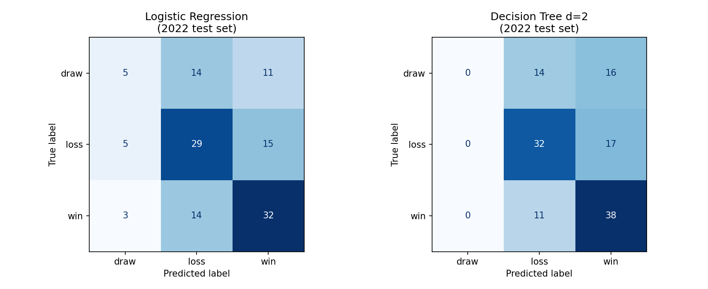
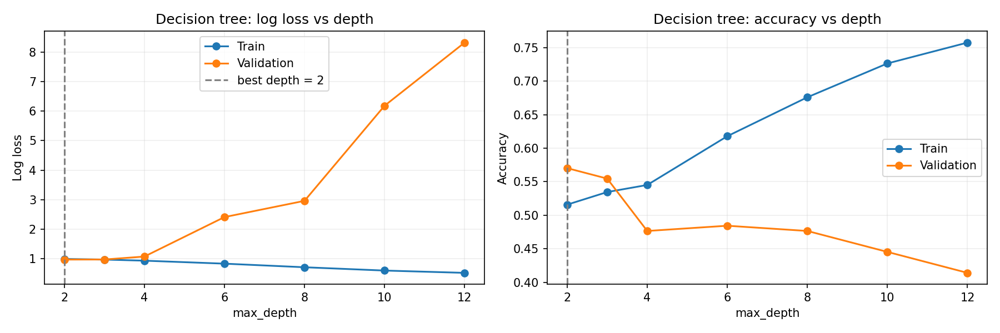
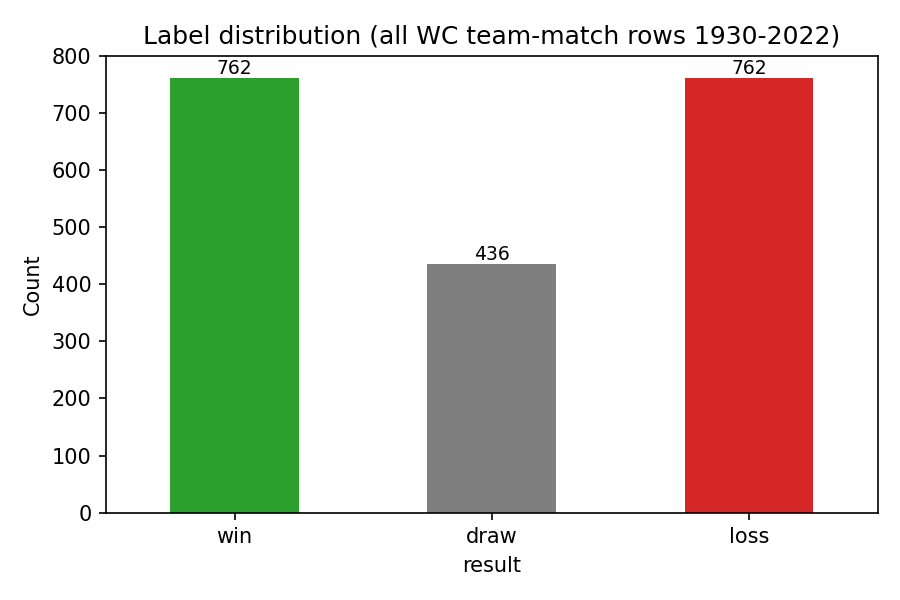
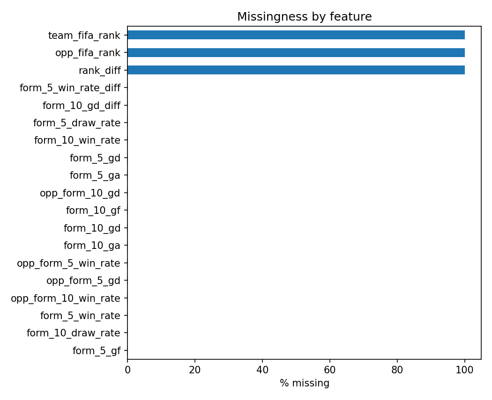
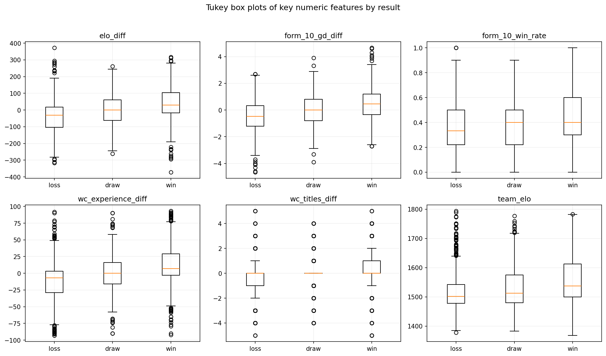
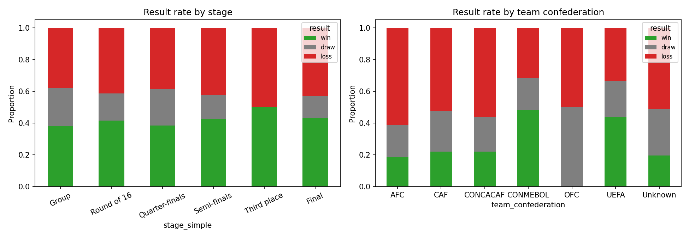

Case Study · Machine Learning
FIFA 2026 World Cup Prediction Pipeline
A 3-class match-outcome classifier trained on nearly a century of World Cup data, wrapped in a 10,000-run Monte Carlo tournament simulation to produce calibrated championship probabilities for every team in the 2026 field.
The Problem
Predicting a World Cup is not one prediction — it is 104 matches that feed a knockout bracket, where a single draw in the group stage can flip which giant goes home early. A binary "won vs. didn't win" model throws away the draw information that group-stage standings depend on, so the whole thing has to be framed as a 3-class classification over {win, draw, loss} with calibrated probabilities.
Those probabilities then feed a Monte Carlo simulator that samples 10,000 full tournaments — group stage through final — to turn match-level uncertainty into stage-reach probabilities for each team.
Architecture
Data flows from Kaggle and user-supplied CSVs through feature engineering
and a single scikit-learn Pipeline, and ends in a 10k-run
Monte Carlo simulator that writes the final predictions as CSV.
WorldCupMatches
post-2014, Elo, 2026 schedule
Elo, rolling form, WC history
impute · scale · OHE
RF / GB, TimeSeriesSplit CV
prune low-signal features
10,000 tournaments
P(R32) … P(Champion)
Methodology (CRISP-DM, 11 stages)
The notebook follows CRISP-DM end-to-end. Each stage maps to a chapter of the course text and to a concrete set of cells in the notebook.
| # | Stage | What happens |
|---|---|---|
| 1 | Problem framing | CRISP-DM framing, 3-class target, success metrics |
| 2 | Data acquisition | Kaggle download via kagglehub, user CSVs for post-2014 data |
| 3 | Reshape & label | Two rows per match (home/away perspectives); build 3-class result |
| 4 | Feature engineering | Rolling form (5/10 games), Elo, FIFA rank, WC experience, host, confederation |
| 5 | Automated EDA | Label distribution, missingness, boxplots, categorical win rates |
| 6 | Preprocessing | ColumnTransformer: median-impute & scale numerics, mode-impute & one-hot encode categoricals; chronological split |
| 7 | Baseline models | One-vs-Rest logistic regression, decision-tree depth sweep |
| 8 | Ensembles | Random forest and gradient boosting inside the same pipeline |
| 9 | Cross-validation & tuning | TimeSeriesSplit(5) + RandomizedSearchCV(n_iter=30) scoring on neg-log-loss |
| 10 | Feature selection | Permutation importance with a 0.001 threshold; refit on the reduced feature set |
| 11 | 2026 simulation | 10,000 Monte Carlo tournaments driven by the calibrated probabilities |
2026 Predictions
Probabilities below are live-rendered from
predictions_2026.csv
— the same artifact the notebook writes after its 10k-run Monte Carlo. Sort by any
round, filter by confederation, or switch how many teams the chart displays.
Click any column header to sort
| # | Team | Group | Conf. | R32 | R16 | QF | SF | Final | Champ |
|---|
All probabilities are simulation estimates from a coursework model and should be read as illustrative, not as betting advice. Stage probabilities are monotonic by construction: reaching the Semifinal implies reaching the Quarterfinal, and so on.
Model Details
Feature families
- Elo — team, opponent, and difference
- Rolling form — 5- and 10-game win/draw rates, goals for/against, goal differential, plus opponent form and symmetric diffs
- Career World Cup — matches, wins, titles, and experience differentials
- FIFA rank — team, opponent, and difference (imputed when missing)
- Context — host flag, same-confederation flag, match year, stage, confederations
Training & tuning
- Preprocessor — median impute + standard-scale numerics, mode impute + one-hot (unknown-safe) categoricals, inside one
ColumnTransformer - Baselines — one-vs-rest logistic regression and a depth-swept decision tree
- Ensembles — random forest and gradient boosting
- Cross-validation —
TimeSeriesSplit(n_splits=5)— never trains on matches that happened after the validation fold - Tuning —
RandomizedSearchCV(n_iter=30)scoringneg_log_loss - Feature pruning — permutation importance; drop anything below 0.001 and refit
Monte Carlo simulation
- 10,000 full tournaments, each sampling W/D/L for every group match from the tuned model's probability output
- Group standings resolved with the real FIFA tie-breakers (points, goal difference, goals for)
- 48-team format with a Round of 32 into a single-elimination bracket through the final
- Per-team stage-reach counts divided by 10,000 give the probabilities you see above
Artifacts
artifacts/final_pipeline.joblib— serialized end-to-end pipeline (preprocessor + classifier)artifacts/predictions_2026.csv— per-team stage probabilities (rendered above)artifacts/figures/*.png— EDA, confusion matrices, permutation importance, champion chartdata/processed/team_match_features.csv— cached engineered feature matrix for fast reruns
Figures
Selected plots exported from the notebook. Click any figure to open it in the lightbox.
 2026 Championship probabilities (10k sims)
2026 Championship probabilities (10k sims)
 Tuned model confusion matrix (2022 test)
Tuned model confusion matrix (2022 test)
 Permutation feature importance
Permutation feature importance
{kind=link}

Baseline confusion matrices (LogReg vs Tree){kind=link}

Decision tree depth sweep{kind=link}

Class balance — W / D / L{kind=link}

Missingness by feature{kind=link}

Numeric features split by result{kind=link}

Win/draw/loss rates by categoryTech Stack
- Python
- pandas
- NumPy
- scikit-learn
- matplotlib
- seaborn
- joblib
- kagglehub
- Jupyter
- Monte Carlo
- CRISP-DM